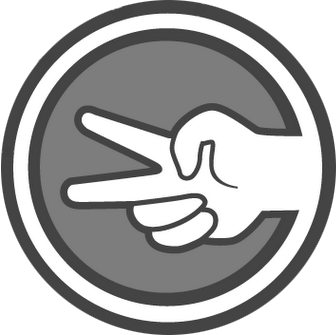
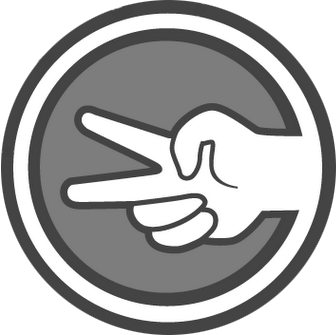

Esta es una version modificada del tradicional juego piedra, papel o tijeras creado por Sheldon Cooper en la
serie Big Bang Theory.
Se le agregan dos nuevas opciones: lagarto y Spock, las reglas son las siguientes.
Las tijeras cortan el papel, el papel envuelve a la piedra, la piedra aplasta al lagarto, el lagarto
envenena a Spock,
Spock rompe la tijera, tijera decapita al lagarto, el lagarto come el papel, el papel desaprueba a Spock,
Spock vaporiza
la piedra y como siempre, la piedra rompe las tijeras.
 
